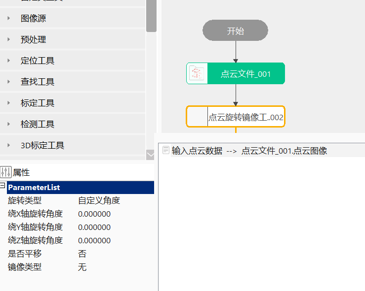

Công cụ xoay và lấy đối xứng đám mây điểm chủ yếu dùng để thực hiện biến đổi xoay, lấy đối xứng đối với ảnh đám mây điểm đầu vào.
Trong đo lường 3D, thực hiện các thao tác như xoay, lấy đối xứng đối với ảnh đám mây điểm đầu vào ban đầu, nhằm thuận tiện cho xử lý tiếp theo.

Không có
| Tên tham số | Mô tả tham số |
|---|---|
| Dữ liệu đám mây điểm đầu vào | Nhập ảnh đám mây điểm cần xử lý |
| Tên tham số | Mô tả tham số |
|---|---|
| Loại xoay | Xoay ảnh đám mây điểm theo một góc nhất định, gồm 4 góc đặc biệt xoay quanh trục Z：0 độ, 90 độ, 180 độ, 270 độ và góc tùy chỉnh xoay quanh XYZ |
| Góc xoay quanh trục X/Y/Z | Góc xoay do người dùng tùy chỉnh, phạm vi giá trị [-360, 360] |
| Có tịnh tiến hay không | Chọn “Có”, thì sau khi xoay sẽ thực hiện biến đổi tịnh tiến |
| Lượng tịnh tiến theo hướng X/Y/Z | Lượng tịnh tiến theo hướng X/Y/Z trong biến đổi tịnh tiến, phạm vi giá trị [-1000000, 1000000], đơn vị là mm |
| Loại lấy đối xứng | Thực hiện thao tác lấy đối xứng đối với ảnh đám mây điểm, gồm 4 loại：không, ngang, dọc và ngang dọc |
| Tên tham số | Mô tả tham số |
|---|---|
| Ảnh đám mây điểm đầu ra | Xuất ảnh đám mây điểm sau khi xoay và lấy đối xứng |
| Ma trận xoay | Xuất ma trận xoay theo góc xoay |
| Tên tham số | Mô tả tham số |
|---|---|
| Ảnh đám mây điểm đầu ra | Xuất ảnh đám mây điểm sau khi xoay và lấy đối xứng |
| Ma trận xoay | Xuất ma trận xoay theo góc xoay |
| Kết quả thực thi | Kết quả thực thi công cụ |
| Thời gian thực thi | Thời gian thực thi công cụ |
Tham khảo “\Samples\3D\点云\点云测量.gvp”。
Công cụ thực thi theo thứ tự xoay, tịnh tiến, lấy đối xứng.